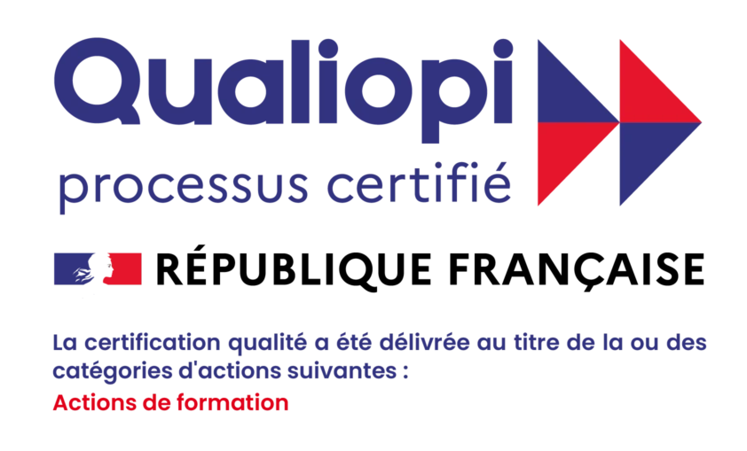
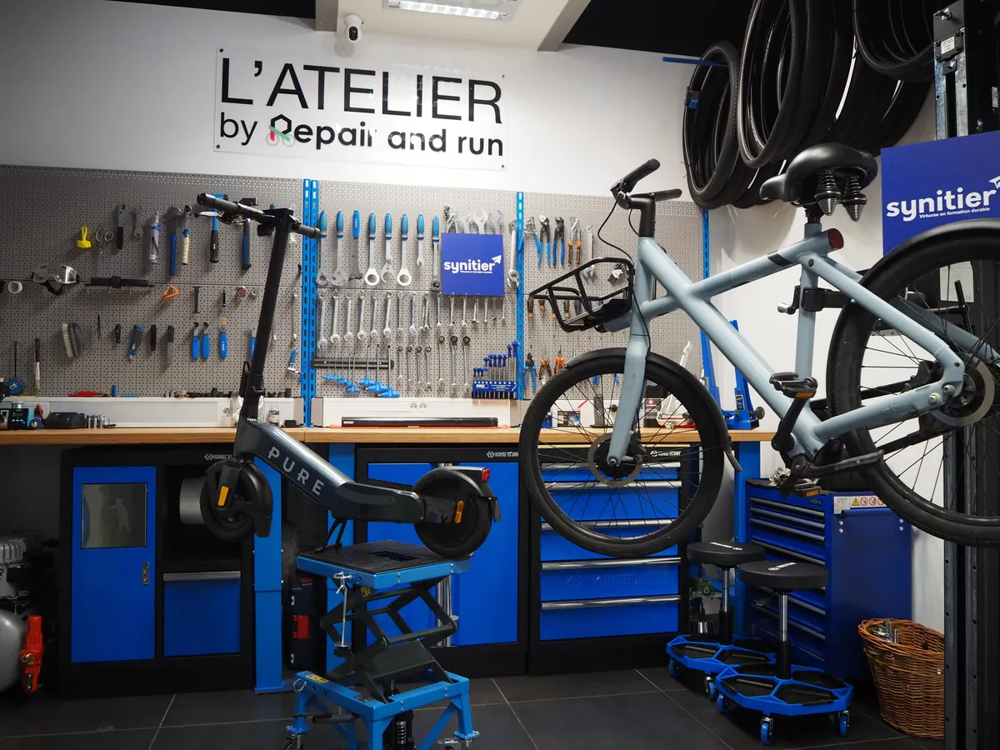
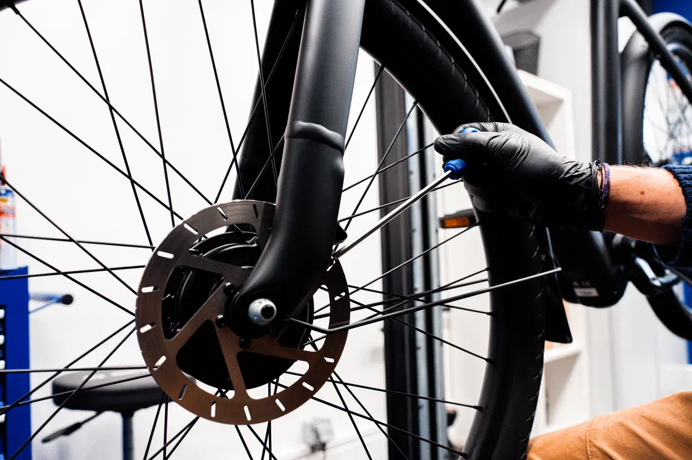
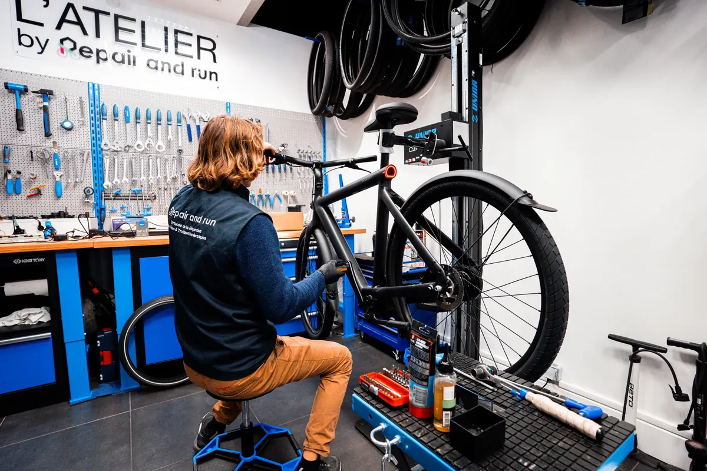

Nos formations
Deux parcours adaptés à votre niveau et à votre projet professionnel.
Nous contacter pour parler de votre projet
Technicien Réparateur en Mobilité Légère et Urbaine - Vélos, Vélos à Assistance Électrique (VAE) et Trottinettes Électriques
La formation la plus complète du catalogue. Du geste technique en atelier à la gestion d'activité : tout ce qu'il faut pour exercer le métier ou même se lancer à son compte.
Découvrir cette formation
TP - Employé technicien-vendeur en matériel de sport
Maîtrisez les gestes techniques des réparations courantes sur les vélos mécaniques et les vélos à assistance électrique : diagnostic, réparations courantes, préparation à la vente et gestion d'atelier. Un titre professionnel.
Découvrir cette formation →💡 Nos formations peuvent être financées par France Travail, le CPF, un OPCO ou votre employeur. Parlons de votre situation →
Un marché en pleine croissance
Les vélos à assistance électrique et les véhicules de déplacement personnel motorisés connaissent une adoption massive dans toutes les villes françaises. La demande de techniciens qualifiés dépasse largement l'offre disponible.
Réparer plutôt que remplacer est au cœur des enjeux de durabilité. Les batteries, les systèmes électroniques embarqués et la sécurité lithium exigent une expertise pointue que peu de professionnels maîtrisent encore.
Autrement dit : vous entrez dans un métier d'avenir, porteur de sens, et les ateliers qui savent vous accueillir après la formation sont déjà là.
Une étude récente confirme que le secteur du vélo recrute fortement.

Si le document ne s'affiche pas, téléchargez l'étude (PDF).
Questions fréquentes
Aucun prérequis technique n'est nécessaire. Nos formations sont accessibles à tous, quel que soit votre parcours. Nos formateurs vous accompagnent pas à pas, depuis les bases jusqu'aux gestes techniques du métier.
Oui, tout à fait. Nos formations sont ouvertes aux demandeurs d'emploi. Elles sont finançables via le CPF, et si votre solde est insuffisant, France Travail peut compléter le financement grâce à une demande d'abondement. Nous vous accompagnons dans ces démarches.
Oui. Grâce à nos sessions individualisées, le planning de formation est adapté à vos disponibilités. Que vous travailliez à temps partiel, en horaires décalés ou en intérim, nous construisons un calendrier compatible avec votre activité professionnelle.
Nos sessions sont individualisées et personnalisées : nous adaptons le planning de formation en fonction de vos disponibilités. Vous travaillez à temps partiel ou vous réalisez des missions en intérim ? Pas de souci, le calendrier sera établi en fonction de vos disponibilités.
Nous travaillons par petits groupes pour garantir un accompagnement étroit, efficace et personnalisé. Chaque session accueille donc un nombre limité de stagiaires afin que chacun puisse pratiquer et progresser à son rythme.
Non, tous les outils et équipements professionnels sont mis à disposition par Synitier. Nos ateliers sont équipés de tout le matériel nécessaire pour travailler dans les conditions réelles du métier.
Oui, c'est même encouragé ! Travailler sur votre propre véhicule est un excellent moyen d'apprendre en situation concrète, en complément des cas pratiques prévus dans le programme.
Si votre budget CPF ne couvre pas l'intégralité du coût de la formation, plusieurs solutions peuvent être envisagées :
- Si vous êtes inscrit à France Travail, nous pouvons vous accompagner dans la réalisation d'une demande d'abondement afin de compléter votre financement.
- Si vous êtes salarié, votre employeur ou votre OPCO peut également participer au financement de votre formation.
- Vous avez aussi la possibilité de compléter le montant restant à charge, avec une solution de paiement en plusieurs fois sans frais.
Notre équipe reste disponible pour étudier avec vous la solution de financement la plus adaptée à votre situation.
Lors de votre inscription à la formation via le CPF, votre identité doit être vérifiée afin de sécuriser la démarche. Cette vérification se fait grâce à FranceConnect+.
Deux solutions sont possibles :
1️⃣ L'Identité Numérique La Poste
Vous pouvez créer votre identité numérique de deux façons :
- Depuis votre smartphone, en téléchargeant l'application L'Identité Numérique La Poste.
Tutoriel officiel – L'Identité Numérique La Poste - En vous rendant dans un bureau de poste, avec une pièce d'identité valide, où un conseiller pourra vous accompagner pour créer votre identité numérique.
2️⃣ France Identité
Si vous possédez la nouvelle carte nationale d'identité électronique et un smartphone compatible, vous pouvez également utiliser l'application France Identité.
Tutoriel officiel – France Identité
La création de votre identité numérique prend généralement quelques minutes et vous permettra ensuite de valider votre inscription à la formation en toute sécurité.
Si vous rencontrez des difficultés, notre équipe peut vous accompagner pas à pas pour vous aider dans ces démarches.
Que vous souhaitiez décrocher un poste en atelier, créer votre propre activité en tant qu'indépendant ou franchisé, nos formations délivrent les compétences clés pour se lancer. Des stages de perfectionnement en entreprise seront également possibles si vous le désirez à l'issue de votre formation.
Vous hésitez entre les parcours ?
Pas sûr du bon niveau ? Des questions sur le financement ? On vous aide à choisir la formation la plus adaptée à votre projet : sans engagement.
Parler de mon projet avec un conseiller